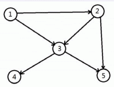

度量一个有向图连通情况的一个指标是连通数，指图中可达定点对的个数。
在下图中，顶点 $1$ 可以到达 1、2、3、4、5；
顶点 $2$ 可以到达 2、3、4、5；
顶点 $3$ 可以到达 3、4、5；
顶点 $4$、$5$ 均只能达到自身，所以它的连通数为 $14$。
请编写一个程序，输入一个图，求它的连通数。

输入数据第一行是图顶点的数量，一个正整数 $N$。 接下来 $N$ 行，每行 $N$ 个字符。第 $i$ 行第 $j$ 列的 $1$ 表示顶点 $i$ 到 $j$ 有边，$0$ 则表示无边。
输出一行一个整数，表示该图的连通数。
3 010 001 100
9
对于 $100\%$ 的数据，$N$ 不超过 $2000$。
 Comet OJ
Comet OJ